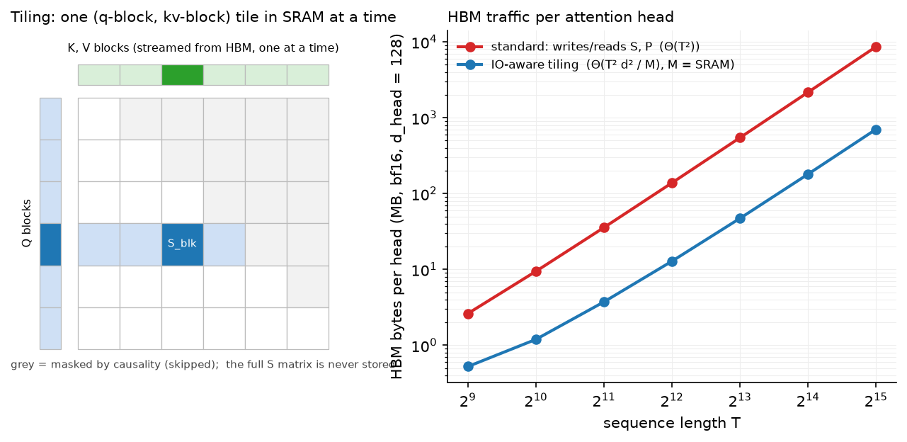
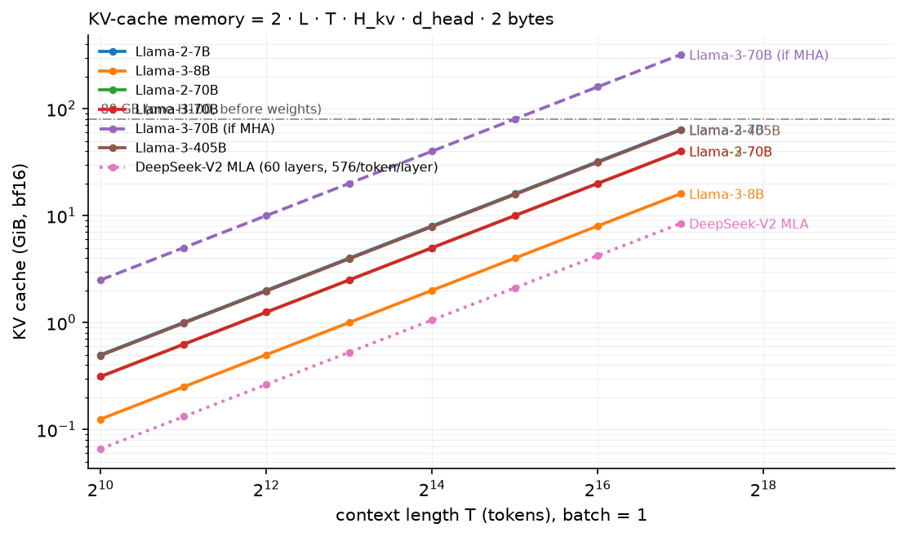

Efficient attention & KV cache¶
Why this matters at staff level. "Implement attention that never materialises the \(T\times T\) matrix" and "how much memory does the KV cache of Llama-3-70B take at 8k context for 64 users" are asked in both coding and system-design rounds, because they separate people who know attention as an equation from people who know it as a memory traffic pattern. Strong signal is the online-softmax derivation with the rescale factor, a working blockwise forward, and the KV-cache formula with numbers.
TL;DR: the interview card¶
- Naive attention writes \(S = QK^\top\) and \(P = \softmax(S)\) to HBM: \(\Theta(T^2)\) bytes per head; the compute is only \(\Theta(T^2 d)\) FLOPs at ~1 FLOP/byte on the softmax, so it is memory-bound.
- Online softmax: keep running max \(m\) and sum \(l\); on a new block, \(m' = \max(m, \max S_{blk})\), \(l' = e^{m-m'}l + \sum e^{S_{blk}-m'}\), \(\text{acc}' = e^{m-m'}\text{acc} + e^{S_{blk}-m'}V_{blk}\); output \(\text{acc}/l\). Exact, one pass.
- FlashAttention: tile Q into blocks that fit SRAM, stream K/V blocks, use online softmax; HBM traffic \(\Theta(T^2d^2/M)\) (\(M\) = SRAM bytes) instead of \(\Theta(T^2)\); store only the row log-sum-exp and recompute \(P\) in backward. FA-2 reorders loops (parallel over query blocks and sequence), FA-3 exploits Hopper async (TMA, warp specialisation) and FP8.
- KV cache per token: \(2\cdot L\cdot H_{kv}\cdot d_{head}\cdot\text{bytes}\). Llama-2-7B bf16: 0.5 MiB/token, 2 GiB at 4k. Llama-3-70B: 320 KiB/token; 64 × 8k tokens = 160 GiB.
- Decode arithmetic intensity \(\approx\) batch size (FLOPs/byte); H100 needs ~300 to be compute-bound, so decode is memory-bound at any practical batch; prefill has intensity \(\approx T\) and is compute-bound.
- PagedAttention (vLLM): KV cache in fixed-size blocks with a block table per sequence, near-zero fragmentation, copy-on-write sharing for prefixes and beam search; 2–4× throughput over static allocation.
- Prefix caching: reuse the cache of a shared prompt prefix (system prompts, few-shot examples) across requests; radix-tree keyed. Chunked prefill: split a long prompt into chunks interleaved with decode steps so decode latency does not spike.
1. Intuition first¶
Attention for one head is \(O = \softmax(QK^\top/\sqrt d)V\) with \(Q, K, V \in \R^{T\times d}\). Take \(T = 4\), \(d = 2\). The score matrix is \(4\times 4\), sixteen numbers; the inputs and output are \(4\times 2\) each. At \(T = 8192\) the score matrix is 67 million numbers per head, and a 32-head layer in bf16 writes 4 GiB of scores and reads them back to apply softmax, then writes and reads \(P\) again to multiply by \(V\). The matmuls themselves are fast; the round trips to HBM are not. On an H100 (3.35 TB/s HBM, ~1 PFLOP/s bf16) an operation needs ~300 FLOPs per byte to be compute-bound; softmax does about one.
The fix is the same as in every blocked linear algebra kernel: load a tile of \(Q\) and a tile of \(K, V\) into on-chip SRAM (about 200 KB per streaming multiprocessor), do all the work for that tile, and never write the intermediate. The obstacle is softmax: each output row needs the maximum and the sum over the whole row before any of the row's probabilities can be formed, and a row is spread across all K tiles. Online softmax resolves it by keeping the running max and running sum and rescaling what was accumulated whenever the max grows.

Left: a query block (blue) processes K/V blocks (green) one at a time; the score tile exists only in SRAM; grey tiles are skipped by causality. Right: HBM bytes per head for standard attention versus tiling as \(T\) grows; the gap is the whole story.
The KV cache is the decode-time version of the same problem. Generating token \(t\) needs attention over all previous keys and values, which would otherwise be recomputed from scratch each step. Caching them turns decode from \(O(t^2)\) per token into \(O(t)\), at the cost of storing \(K_{1:t}, V_{1:t}\) for every layer. That store, not the weights, is what limits how many sequences a GPU can serve at long context.
2. The math¶
2.1 Online softmax¶
For a row of scores \(s \in \R^{T}\) split into blocks \(s^{(1)},\dots,s^{(n)}\), define after block \(j\): \(m_j = \max(m_{j-1}, \max s^{(j)})\), \(l_j = e^{m_{j-1}-m_j}\,l_{j-1} + \sum_i e^{s^{(j)}_i - m_j}\), with \(m_0 = -\infty\), \(l_0 = 0\). Claim: \(l_j = \sum_{i\in \text{blocks}\le j} e^{s_i - m_j}\).
Proof by induction. True for \(j = 0\). Assume it for \(j-1\). Then \(e^{m_{j-1}-m_j}\,l_{j-1} = \sum_{i\le j-1} e^{s_i - m_{j-1}}e^{m_{j-1}-m_j} = \sum_{i\le j-1}e^{s_i - m_j}\), and adding the new block's terms gives the claim. \(\square\)
Extend to the numerator with \(V\): let \(\text{acc}_j = \sum_{i\le j} e^{s_i - m_j}v_i\). The same rescaling gives
What it means: the max is only there for numerical safety; any \(m\) gives the same final ratio, so updating it mid-stream and correcting the partial sums by \(e^{m_{old}-m_{new}}\) changes nothing. The output is exact, not approximate.
2.2 FlashAttention's IO complexity¶
Let \(M\) be SRAM bytes and \(d\) the head dimension (elements of size \(b\) bytes). Choose the K/V block size \(B_c \approx M/(4db)\) so a block of K and V plus the score tile fits, and the query block \(B_r\) similarly. The outer loop runs over \(T/B_r\) query blocks; each streams all of K and V (\(2Tdb\) bytes) once. Total HBM reads \(\approx \frac{T}{B_r}\cdot 2Tdb = \Theta\!\left(\frac{T^2d^2b^2}{M}\right)\), versus \(\Theta(T^2 b)\) writes and reads of \(S\) and \(P\) for the standard algorithm. With \(d = 128\), \(b = 2\), \(M = 200\) KB the ratio \(d^2b/M \approx 0.16\), and the standard algorithm also pays for \(P\) twice; the paper reports up to 9× fewer HBM accesses and 2–4× wall-clock speed-ups on A100 versus a fused-but-unblocked baseline.
Backward with recomputation. Standard backward needs \(P\) (\(T\times T\)) to form \(dV = P^\top dO\) and \(dS = P\circ(dP - \delta)\). FlashAttention stores only \(O\) and the row statistic \(L_i = m_i + \log l_i\) (one number per row) and recomputes the tile \(P_{ij} = e^{S_{ij} - L_i}\) inside the backward kernel. Extra FLOPs (one more \(QK^\top\)) are cheaper than the HBM traffic they replace.
FA-2 and FA-3 (literacy). FA-2 moved the outer loop to query blocks so each thread block owns an output row-block (no inter-block reductions), parallelised over sequence length as well as batch and heads, and cut non-matmul work; ~2× over FA-1. FA-3 targets Hopper: asynchronous TMA loads and warp-group matmuls overlapped with softmax, and FP8 with block quantisation; ~1.5–2× over FA-2 in bf16 and higher in FP8.
2.3 KV-cache memory¶
Per layer, per token, per KV head, one key and one value vector of \(d_{head}\) elements:
Numbers (bf16, \(b = 2\)):
| Model | \(L\) | \(H\) | \(H_{kv}\) | \(d_{head}\) | per token | 1 × 4k | 1 × 128k | 64 × 8k |
|---|---|---|---|---|---|---|---|---|
| Llama-2-7B (MHA) | 32 | 32 | 32 | 128 | 512 KiB | 2 GiB | 64 GiB | 256 GiB |
| Llama-3-8B (GQA) | 32 | 32 | 8 | 128 | 128 KiB | 0.5 GiB | 16 GiB | 64 GiB |
| Llama-3-70B (GQA) | 80 | 64 | 8 | 128 | 320 KiB | 1.25 GiB | 40 GiB | 160 GiB |
| Llama-3-70B if MHA | 80 | 64 | 64 | 128 | 2.5 MiB | 10 GiB | 320 GiB | 1.25 TiB |
| Llama-3-405B (GQA) | 126 | 128 | 8 | 128 | 504 KiB | ≈2 GiB | 63 GiB | 252 GiB |
| DeepSeek-V2 (MLA) | 60 | 128 | n/a | n/a | 67.5 KiB | 270 MiB | 8.4 GiB | 34 GiB |
For MLA the per-token cost is \(L(d_c + d^R_h)b = 60\cdot 576\cdot 2\) bytes. The 64-sequence × 8k-token column is the one to remember: a 70B GQA model needs two 80 GB GPUs of cache for that batch before weights (140 GB in bf16), which is why serving is tensor-parallel across a node and why cache quantisation (chapter 5) matters.

Batch-1 KV cache in bf16 for several models; the dashed line is what Llama-3-70B would need without GQA, the dotted one DeepSeek-V2's MLA cache.
2.4 Prefill vs decode arithmetic intensity¶
Per decode step for a batch of \(B\) sequences at context \(T\): FLOPs \(\approx 2NB\) (every weight touched once per sequence), bytes \(\approx Nb + BT\cdot\text{bytes}_{\text{KV/token}}\). With \(B = 1\) the intensity is \(2N/(Nb) = 1\) FLOP per byte for bf16: decode reads the whole model to produce one token. Intensity grows roughly linearly with \(B\) until the cache term dominates, after which it saturates at \(2N/(T\cdot\text{bytes}_{\text{KV/token}})\): at Llama-3-70B and \(T = 8\)k that ceiling is about 53 FLOP/byte, still below the ~300 an H100 needs. Prefill processes \(T\) prompt tokens per weight read: intensity \(\approx T\), compute-bound for any prompt longer than a few hundred tokens. The two phases want different batching, which is the motivation for chunked prefill and for disaggregated prefill/decode serving; see inference systems and the roofline chapter.
2.5 Paged and shared caches (literacy)¶
Static per-request allocation of max_len slots wastes memory on unused tail and cannot
share. PagedAttention keeps the cache in fixed-size blocks (e.g. 16 tokens) and a per
sequence block table; attention kernels gather blocks via the table. Waste falls to under
one block per sequence, prefixes can be shared with reference counts and copy-on-write, and
memory can be allocated as sequences grow. Prefix caching (SGLang's RadixAttention, vLLM's
automatic prefix caching) keys cached blocks by their token prefix so a shared system prompt
is computed once. Chunked prefill (Sarathi-Serve) breaks a long prompt into chunks scheduled
alongside decode tokens so that a new long request does not stall existing streams.
3. Implementation¶
for qs in range(0, T, block_q):
q_blk = q[:, :, qs : qs + block_q] # (B, H, bq, d_head)
m = torch.full((B, H, bq), float("-inf")) # running row max
l = torch.zeros(B, H, bq) # running row sum
acc = torch.zeros(B, H, bq, d_head) # un-normalised output
for ks in range(0, kv_end, block_kv):
k_blk = k[:, :, ks : ks + block_kv] # (B, H, bk, d_head)
v_blk = v[:, :, ks : ks + block_kv] # (B, H, bk, d_head)
s = q_blk @ k_blk.transpose(-2, -1) * scale # (B, H, bq, bk) the tile
if causal: s = s.masked_fill(kj > qi, -inf)
m_new = torch.maximum(m, s.amax(dim=-1)) # (B, H, bq)
p = torch.exp(s - m_new[..., None]) # (B, H, bq, bk)
alpha = torch.exp(m - m_new) # (B, H, bq) rescale factor
l = alpha * l + p.sum(dim=-1)
acc = alpha[..., None] * acc + p @ v_blk # (B, H, bq, d_head)
m = m_new
out[:, :, qs : qs + bq] = acc / l[..., None]
lse[:, :, qs : qs + bq] = m + torch.log(l) # saved for backward
The five lines from m_new to m = m_new are §2.1. alpha is the correction
\(e^{m_{old} - m_{new}}\) applied to both the denominator and the accumulator; when the max
does not change it is 1. For causal attention the K/V loop stops at the end of the query
block (kv_end), which is where the real kernel gets its ~2× saving, and within the
diagonal tile positions with \(j > i\) are masked. lse is the row statistic the backward
pass would use to recompute p. The outer loop has no dependency between query blocks;
that is the parallelism FA-2 exploits.
def kv_bytes_per_token(spec, dtype_bytes=2):
return 2 * spec.n_layers * spec.n_kv_heads * spec.d_head * dtype_bytes
kv_cache_calc holds the geometry of six production models as ModelSpecs and computes
bytes per token, total cache, the maximum batch at a context given HBM, and prefill/decode
intensities. The test pins Llama-2-7B to exactly 2 GiB at 4k tokens and 64 × 8k of
Llama-3-70B to exactly 160 GiB.
Full implementation: src/mlbook/llm/flash_attention.py
"""An educational FlashAttention forward pass: blockwise attention with online softmax.
Standard attention materialises S = QK^T (T×T) and P = softmax(S) in HBM.
FlashAttention never does: for each block of queries it streams blocks of K, V
through SRAM, keeping a running max ``m``, running denominator ``l`` and
un-normalised accumulator ``acc``:
m_new = max(m, rowmax(S_blk))
l_new = exp(m − m_new) · l + rowsum(exp(S_blk − m_new))
acc = exp(m − m_new) · acc + exp(S_blk − m_new) @ V_blk
O = acc / l at the end.
The rescale factor exp(m − m_new) corrects everything accumulated under the old
max, so the result is *exactly* softmax(S)V, just computed in a different order.
"""
from __future__ import annotations
import math
import torch
def online_softmax(x: torch.Tensor, chunk: int) -> torch.Tensor:
"""softmax over a 1-D tensor computed in one streaming pass over ``chunk``-sized pieces.
Args:
x: (T,).
Returns:
(T,) identical (up to float error) to torch.softmax(x, 0).
"""
m = torch.tensor(float("-inf")) # running max
l = torch.tensor(0.0) # running sum of exp(x - m)
for start in range(0, x.shape[0], chunk):
blk = x[start : start + chunk] # (chunk,)
m_new = torch.maximum(m, blk.max())
l = l * torch.exp(m - m_new) + torch.exp(blk - m_new).sum()
m = m_new
return torch.exp(x - m) / l # (T,)
def standard_attention(q: torch.Tensor, k: torch.Tensor, v: torch.Tensor, causal: bool) -> torch.Tensor:
"""Reference: materialise the full (T, T) score matrix. q, k, v: (B, H, T, d_head)."""
T = q.shape[-2]
s = q @ k.transpose(-2, -1) / math.sqrt(q.shape[-1]) # (B, H, T, T)
if causal:
mask = torch.tril(torch.ones(T, T, dtype=torch.bool)) # (T, T)
s = s.masked_fill(~mask, float("-inf"))
return torch.softmax(s, dim=-1) @ v # (B, H, T, d_head)
def flash_attention_forward(
q: torch.Tensor, k: torch.Tensor, v: torch.Tensor, block_q: int, block_kv: int, causal: bool = False
) -> tuple[torch.Tensor, torch.Tensor]:
"""Blockwise exact attention; never allocates a (T, T) matrix.
Args:
q, k, v: (B, H, T, d_head).
block_q, block_kv: tile sizes (in a kernel these are set so tiles fit SRAM).
Returns:
out: (B, H, T, d_head) = softmax(QK^T/√d) V.
lse: (B, H, T) row log-sum-exp, saved for the backward pass (recomputation).
"""
B, H, T, d_head = q.shape
scale = 1.0 / math.sqrt(d_head)
out = torch.zeros_like(q) # (B, H, T, d_head)
lse = torch.zeros(B, H, T) # (B, H, T)
for qs in range(0, T, block_q):
q_blk = q[:, :, qs : qs + block_q] # (B, H, bq, d_head)
bq = q_blk.shape[2]
m = torch.full((B, H, bq), float("-inf")) # (B, H, bq) running row max
l = torch.zeros(B, H, bq) # (B, H, bq) running row sum
acc = torch.zeros(B, H, bq, d_head) # (B, H, bq, d_head) un-normalised output
kv_end = min(T, qs + bq) if causal else T # causal: skip fully-masked K/V blocks
for ks in range(0, kv_end, block_kv):
k_blk = k[:, :, ks : ks + block_kv] # (B, H, bk, d_head)
v_blk = v[:, :, ks : ks + block_kv] # (B, H, bk, d_head)
s = q_blk @ k_blk.transpose(-2, -1) * scale # (B, H, bq, bk)
if causal:
qi = torch.arange(qs, qs + bq)[:, None] # (bq, 1) absolute query positions
kj = torch.arange(ks, ks + k_blk.shape[2])[None, :] # (1, bk)
s = s.masked_fill(kj > qi, float("-inf")) # (B, H, bq, bk)
m_new = torch.maximum(m, s.amax(dim=-1)) # (B, H, bq)
p = torch.exp(s - m_new[..., None]) # (B, H, bq, bk) exp against the *new* max
alpha = torch.exp(m - m_new) # (B, H, bq) rescale for the old max
l = alpha * l + p.sum(dim=-1) # (B, H, bq)
acc = alpha[..., None] * acc + p @ v_blk # (B, H, bq, d_head)
m = m_new
out[:, :, qs : qs + bq] = acc / l[..., None] # (B, H, bq, d_head)
lse[:, :, qs : qs + bq] = m + torch.log(l) # (B, H, bq)
return out, lse
def attention_hbm_bytes_standard(T: int, d_head: int, dtype_bytes: int = 2) -> int:
"""HBM traffic of naive attention per head: read Q,K,V; write S; read S; write P; read P; write O.
S and P are T×T, so traffic is Θ(T² ) bytes; Q, K, V, O are Θ(T d).
"""
qkvo = 4 * T * d_head * dtype_bytes
s_and_p = 4 * T * T * dtype_bytes # write S, read S, write P, read P
return qkvo + s_and_p
def attention_hbm_bytes_flash(T: int, d_head: int, sram_bytes: int, dtype_bytes: int = 2) -> float:
"""FlashAttention HBM traffic per head: Θ(T² d² / M) with M = SRAM size (bytes).
Each pass over K, V (T d bytes) happens once per query block; the number of query
blocks is T d / (M / dtype_bytes) up to constants, giving T·d · T·d / M reads.
"""
kv_bytes = 2 * T * d_head * dtype_bytes
n_query_blocks = max(1.0, (T * d_head * dtype_bytes) / sram_bytes)
return 2 * T * d_head * dtype_bytes + n_query_blocks * kv_bytes
Full implementation: src/mlbook/llm/kv_cache_calc.py
"""KV-cache and decode arithmetic-intensity calculators (pure Python/NumPy).
Per token, per layer, the cache stores one key and one value vector per KV head:
bytes_per_token = 2 (K and V) · L · H_kv · d_head · bytes_per_element
KV cache (batch B, context T) = B · T · bytes_per_token
Multi-head latent attention (DeepSeek-V2/V3) stores a compressed latent
``c_t ∈ R^{d_c}`` plus a decoupled RoPE key ``k^R_t ∈ R^{d_h^R}`` instead of K and V:
bytes_per_token_MLA = L · (d_c + d_h^R) · bytes_per_element
"""
from __future__ import annotations
from dataclasses import dataclass
@dataclass(frozen=True)
class ModelSpec:
"""Attention geometry of a decoder-only Transformer."""
name: str
n_layers: int
n_heads: int
n_kv_heads: int
d_head: int
n_params: float # total parameters (for weight-memory and FLOP estimates)
@property
def d_model(self) -> int:
return self.n_heads * self.d_head
# Architecture numbers from the Llama 2 paper, the Llama 3 herd paper and the
# Mistral 7B paper (layers / heads / KV heads / head dim).
LLAMA2_7B = ModelSpec("Llama-2-7B", n_layers=32, n_heads=32, n_kv_heads=32, d_head=128, n_params=6.7e9)
LLAMA2_70B = ModelSpec("Llama-2-70B", n_layers=80, n_heads=64, n_kv_heads=8, d_head=128, n_params=69e9)
LLAMA3_8B = ModelSpec("Llama-3-8B", n_layers=32, n_heads=32, n_kv_heads=8, d_head=128, n_params=8.0e9)
LLAMA3_70B = ModelSpec("Llama-3-70B", n_layers=80, n_heads=64, n_kv_heads=8, d_head=128, n_params=70e9)
LLAMA3_405B = ModelSpec("Llama-3-405B", n_layers=126, n_heads=128, n_kv_heads=8, d_head=128, n_params=405e9)
MISTRAL_7B = ModelSpec("Mistral-7B", n_layers=32, n_heads=32, n_kv_heads=8, d_head=128, n_params=7.2e9)
# A hypothetical MHA version of Llama-3-70B, to show what GQA saves.
LLAMA3_70B_MHA = ModelSpec("Llama-3-70B (if MHA)", n_layers=80, n_heads=64, n_kv_heads=64, d_head=128, n_params=70e9)
def kv_bytes_per_token(spec: ModelSpec, dtype_bytes: int = 2) -> int:
"""2 · L · H_kv · d_head · bytes."""
return 2 * spec.n_layers * spec.n_kv_heads * spec.d_head * dtype_bytes
def kv_cache_bytes(spec: ModelSpec, seq_len: int, batch: int = 1, dtype_bytes: int = 2) -> int:
"""Total KV-cache bytes for ``batch`` sequences of ``seq_len`` tokens."""
return batch * seq_len * kv_bytes_per_token(spec, dtype_bytes)
def mla_bytes_per_token(n_layers: int, d_c: int = 512, d_rope: int = 64, dtype_bytes: int = 2) -> int:
"""MLA cache: L · (d_c + d_h^R) · bytes (DeepSeek-V2 defaults d_c=512, d_h^R=64)."""
return n_layers * (d_c + d_rope) * dtype_bytes
def max_batch_at_context(spec: ModelSpec, seq_len: int, hbm_bytes: float, dtype_bytes: int = 2) -> int:
"""How many ``seq_len`` sequences fit after the weights are resident in ``hbm_bytes``."""
free = hbm_bytes - spec.n_params * dtype_bytes
if free <= 0:
return 0
return int(free // kv_cache_bytes(spec, seq_len, 1, dtype_bytes))
def decode_arithmetic_intensity(spec: ModelSpec, batch: int, context: int, dtype_bytes: int = 2) -> float:
"""FLOPs per HBM byte for one decode step of a batch (weights read once, KV read per sequence).
FLOPs ≈ 2 · N · batch (one token per sequence through all weights)
bytes ≈ N · dtype + batch · context · kv_bytes_per_token
"""
flops = 2.0 * spec.n_params * batch
bytes_moved = spec.n_params * dtype_bytes + batch * context * kv_bytes_per_token(spec, dtype_bytes)
return flops / bytes_moved
def prefill_arithmetic_intensity(spec: ModelSpec, prompt_tokens: int, dtype_bytes: int = 2) -> float:
"""Prefill processes ``prompt_tokens`` tokens per weight read: intensity ≈ 2 N T / (N · bytes) = 2T/bytes."""
flops = 2.0 * spec.n_params * prompt_tokens
bytes_moved = spec.n_params * dtype_bytes
return flops / bytes_moved
def human_bytes(n: float) -> str:
"""Format bytes as KiB/MiB/GiB/TiB."""
for unit in ("B", "KiB", "MiB", "GiB", "TiB"):
if n < 1024 or unit == "TiB":
return f"{n:.2f} {unit}"
n /= 1024
return f"{n:.2f} TiB"
How you'd test it. online_softmax against torch.softmax; the blockwise forward
against a materialised reference for non-causal and causal cases with block sizes that do
not divide \(T\) (ragged last tiles are where bugs hide); lse against torch.logsumexp;
the calculator against hand-computed byte counts.
Retype by hand¶
| Symbol | File | Target time |
|---|---|---|
online_softmax |
src/mlbook/llm/flash_attention.py |
5 minutes |
flash_attention_forward (causal included) |
src/mlbook/llm/flash_attention.py |
25 minutes |
kv_bytes_per_token, kv_cache_bytes |
src/mlbook/llm/kv_cache_calc.py |
5 minutes |
Fine to just read: standard_attention, attention_hbm_bytes_*, mla_bytes_per_token,
max_batch_at_context, decode_arithmetic_intensity, prefill_arithmetic_intensity.
Check with python -m pytest tests/test_llm_flash_attention.py tests/test_llm_kv_cache.py -q
(test_online_softmax_matches_softmax, test_flash_forward_equals_standard_attention,
test_flash_forward_causal_with_ragged_blocks, test_llama2_7b_half_mebibyte_per_token,
test_batch_of_64_times_8k).
4. Systems view: cost, failure modes, trade-offs¶
Where the time goes. For a 70B GQA model on 8×H100 at 8k context, weights are 140 GB and a 64-sequence cache is 160 GB; each decode step reads both, ~300 GB across the node, at ~27 TB/s aggregate: ~11 ms per step just for memory traffic. Cutting cache bytes (GQA, MLA, FP8/INT8 cache) or weights (INT4) is a direct latency and batch-size win; FLOPs are almost irrelevant. Prefill is the opposite: a 4k prompt is 4k × 140 GFLOP ≈ 0.6 PFLOP, ~1 s on one GPU, dominated by matmuls, where FlashAttention's tiling and tensor-core utilisation matter.
Failure modes.
| Failure | Symptom | Fix |
|---|---|---|
| Materialising \(S\) for long context | OOM at \(T \ge 32\)k in training, attention dominating step time | FlashAttention / SDPA with flash backend |
| Forgetting the rescale \(e^{m-m'}\) in a custom kernel | wrong outputs only when a later block has a larger score (rare in tests, common in practice) | test with scores scaled ×20 and random block orders |
Static cache allocation at max_len |
batch size 5–10× lower than possible | paged allocation |
| Cache in fp32 | 2× memory for no accuracy | bf16 or FP8/INT8 cache with per-head scales |
| Long prompts starving decode | tail latency spikes for streaming users | chunked prefill or disaggregated prefill |
| Recomputing the system prompt per request | wasted prefill compute | prefix caching |
When to use what.
| Situation | Decision rule |
|---|---|
| Training at any \(T \ge 2\)k | FlashAttention-class kernel, bf16, document masks via varlen API |
| Serving, high throughput | paged KV, continuous batching, prefix cache; quantise cache before weights if cache > weights |
| Serving, low latency single stream | INT4/INT8 weights (chapter 5), speculative decoding; cache size matters less at batch 1 |
| Very long context (≥128k) | GQA/MLA + FP8 cache + chunked prefill; consider SWA layers or hybrid SSM (chapter 3) |
| Custom attention variants (sinks, sparse) | write the mask in the blockwise loop; skip fully masked tiles for speed |
5. In production¶
Stanford/Together: FlashAttention
Problem: attention was memory-bound and could not train at long context. Dao et al. (2022) made attention IO-aware: tiling, online softmax, recomputation in backward, no \(T\times T\) materialisation. Result: exact attention with up to 9× fewer HBM accesses, 2–4× speed-ups, and 16k–64k context training becoming routine. Rejected alternative: approximate attention (low-rank, sparse), which saved FLOPs but not wall-clock time because it did not address memory traffic. Follow-ups (FA-2, FA-3) are engineering of the same idea for newer hardware. Source: FlashAttention: Fast and Memory-Efficient Exact Attention with IO-Awareness (NeurIPS 2022, arXiv:2205.14135); FlashAttention-2 (arXiv:2307.08691); FlashAttention-3 (arXiv:2407.08608).
UC Berkeley: vLLM and PagedAttention
Problem: serving systems reserved contiguous cache for max_len and lost 60–80% of KV
memory to fragmentation and reservation. Kwon et al. (2023) borrowed OS paging: blocks,
block tables, copy-on-write for shared prefixes and beams. vLLM reports 2–4× throughput
at equal latency over FasterTransformer and Orca. Rejected alternative: request-level
memory pools with compaction, which cannot share prefixes and still fragment.
Source: Efficient Memory Management for Large Language Model Serving with PagedAttention.
DeepSeek: MLA for cache-bound decode
DeepSeek-V2 reports a 93.3% KV-cache reduction relative to their dense predecessor and a 5.76× maximum generation throughput, attributing both to MLA: the cache is what set the batch size. V3 keeps MLA and adds FP8 for weights and activations in training. Source: DeepSeek-V2, DeepSeek-V3.
Meta: Llama 3 long context
Llama 3 extends context to 128k in a late pretraining stage (chapter 7) and reports that this requires GQA (8 KV heads) and attention kernels with document masking to be feasible; the 405B model's cache at 128k would otherwise be measured in terabytes. Source: The Llama 3 Herd of Models.
6. Interview questions and strong answers¶
Derive online softmax and explain why the result is exact.
Keep \((m, l, \text{acc})\); for a new block compute \(m' = \max(m, \max s)\), multiply the old \(l\) and acc by \(e^{m - m'}\) so they are expressed relative to the new max, add the block's \(e^{s - m'}\) terms, and at the end divide acc by \(l\). The subtracted max cancels in the ratio, so any sequence of maxima gives the same output; it is a reassociation of the sum, not an approximation. Staff follow-up: Numerical differences? Rounding order differs from the reference at the \(10^{-6}\) level in fp32 and ~\(10^{-3}\) in bf16; tests should use tolerances, not equality.
Why is FlashAttention faster if it does more FLOPs?
Standard attention is memory-bound: the softmax and the \(PV\) read/write \(T^2\) values at ~1 FLOP/byte. Tiling keeps the score tile in SRAM (~20× the bandwidth of HBM) and recomputation in backward trades cheap FLOPs for expensive bytes. Wall-clock follows bytes moved, not FLOPs. Staff follow-up: When would it not help? Very short sequences (\(T \lesssim 128\)) where \(S\) fits in cache anyway, or head dims beyond what the kernel supports.
Size the KV cache for Llama-3-70B serving 64 concurrent 8k-token chats.
\(2\cdot 80\cdot 8\cdot 128\cdot 2 = 320\) KiB per token; \(\times 8192 \times 64 = 160\) GiB. Plus 140 GB of bf16 weights, so at least 4 H100s just for memory, realistically 8 with tensor parallelism and headroom. Options to shrink: FP8 cache (halves it), INT4 weights, fewer concurrent sequences, or an MLA-style model. Staff follow-up: Where does Llama-2-7B land? MHA: 512 KiB/token, so the same batch needs 256 GiB, more than the 70B GQA model. That is the whole case for GQA.
Explain why decode is memory-bound and what batching does.
Each decode step reads every weight once (and the batch's cache) to produce one token per sequence: about 1 FLOP per byte at batch 1, far below the hardware's ~300. Batching \(B\) sequences reuses each weight read \(B\) times, raising intensity ~linearly until the cache reads dominate. Prefill is the reverse: \(T\) tokens per weight read, compute-bound. Staff follow-up: Implication for scheduling? Mix prefill chunks into decode batches (chunked prefill) or run prefill on separate GPUs.
What does PagedAttention change in the attention kernel?
Keys and values are gathered by a block table instead of a contiguous pointer: the kernel loops over blocks, fetching each from its physical location. Cost is an indirection per block, negligible against the bytes moved; benefit is near-zero fragmentation and prefix sharing with copy-on-write. Staff follow-up: Block size trade-off? Larger blocks amortise the indirection and match kernel tiles; smaller blocks waste less at sequence ends and share prefixes at finer granularity.
7. Exercises¶
-
★ Compute bytes per token for Mistral-7B (32 layers, 8 KV heads, \(d_h = 128\)) in bf16 and the cache of its 4096-token rolling window per sequence.
Solution
\(2\cdot 32\cdot 8\cdot 128\cdot 2 = 131{,}072\) bytes = 128 KiB per token; the window caps the cache at \(4096\times 128\) KiB = 512 MiB per sequence regardless of length.
-
★★ (coding) Extend
flash_attention_forwardto accept a sliding-window width and skip K/V blocks entirely outside the window. Test againstmasked_attentionwithsliding_window_maskfrom chapter 3.Solution
Start the K/V loop at
ks = max(0, (qs - window + 1) // block_kv * block_kv)and adds.masked_fill(qi - kj >= window, -inf)next to the causal mask. Test: -
★★ Show that storing \(L_i = m_i + \log l_i\) per row is enough to recompute any tile of \(P\) in backward, and count the FLOPs saved versus stored bytes for \(T = 8\)k, \(d = 128\).
Solution
\(P_{ij} = e^{S_{ij} - m_i}/l_i = e^{S_{ij} - L_i}\), so a tile needs only the recomputed \(S_{ij} = q_i\cdot k_j/\sqrt d\) and \(L_i\). Storing \(P\) would cost \(T^2\cdot 2\) bytes = 128 MiB per head; recomputing costs \(2T^2d = 17\) GFLOP per head, about 17 µs at 1 PFLOP/s versus ~40 µs to read 128 MiB at 3.35 TB/s. Recompute wins, and the win grows with \(T\).
-
★★★ Design the cache layout for a server that must share a 2k-token system prompt across all requests, support 4-way beam search, and evict least-recently-used prefixes. State the data structures and the copy-on-write rule.
Solution
Physical blocks of 16 tokens with reference counts; a radix tree from token prefixes to block lists (prefix cache); per-sequence block tables. A new request walks the tree, reuses the system-prompt blocks (refcount++), and allocates fresh blocks for its own tokens. Beams fork by copying the table, not the blocks; the first write to a shared partially-filled block copies that block (copy-on-write) and decrements the old refcount. Eviction removes tree leaves with refcount 0 in LRU order. This is the vLLM + RadixAttention design.
References¶
- Kwon et al. Efficient Memory Management for Large Language Model Serving with PagedAttention. SOSP 2023. arXiv:2309.06180
- DeepSeek-AI. DeepSeek-V2. 2024. arXiv:2405.04434
- DeepSeek-AI. DeepSeek-V3 Technical Report. 2024. arXiv:2412.19437
- Meta AI. The Llama 3 Herd of Models. 2024. arXiv:2407.21783
- Dao et al. FlashAttention: Fast and Memory-Efficient Exact Attention with IO-Awareness. NeurIPS 2022. arXiv:2205.14135
- Dao. FlashAttention-2: Faster Attention with Better Parallelism and Work Partitioning. 2023. arXiv:2307.08691
- Shah et al. FlashAttention-3: Fast and Accurate Attention with Asynchrony and Low-precision. 2024. arXiv:2407.08608
- Milakov, Gimelshein. Online normalizer calculation for softmax. 2018. arXiv:1805.02867
- Zheng et al. SGLang: Efficient Execution of Structured Language Model Programs. 2023. arXiv:2312.07104 (RadixAttention prefix caching)
- Agrawal et al. Taming Throughput-Latency Tradeoff in LLM Inference with Sarathi-Serve. OSDI 2024. arXiv:2403.02310 (chunked prefill)
- Pope et al. Efficiently Scaling Transformer Inference. MLSys 2023. arXiv:2211.05102 (decode memory-boundedness analysis)